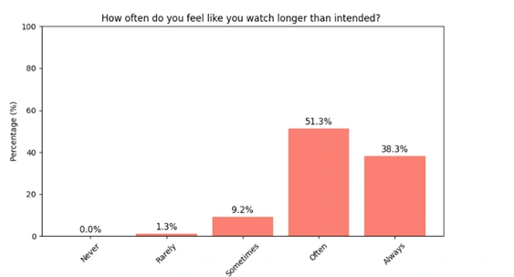
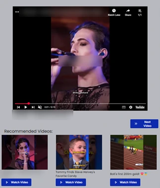
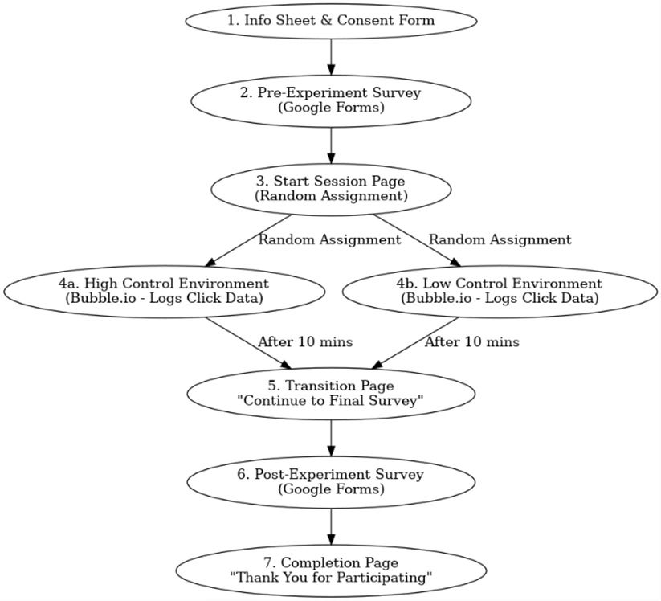
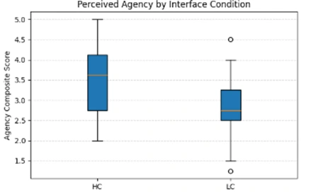

Does giving people control change how they feel about a platform?
For my final-year project, I built two versions of a short-form video app and ran a controlled experiment to see how user control and transparency affect people's sense of agency, trust, satisfaction and awareness of time.
Dissertation title: Examining the Impact of User Control and Automated Features on Sense of Agency in Short Form Entertainment Platforms.
The question
Short-form video platforms rely on autoplay, endless scrolling and recommendations that don't explain themselves. They're designed to maximize viewing time, and many users feel they watch longer than they meant to.
I wanted to know whether giving people visible controls, and explaining why each video was recommended, would change how in control they felt, how much they trusted the platform, and how they behaved.

What I built
Two versions of the same app showed the same hand-picked set of videos, shuffled randomly, so the only difference was the interface:
High control
Autoplay off by default with an on/off toggle, a genre filter, a visible session timer, and an explanation of why each video was recommended.
Low control
Videos autoplay in an endless loop, with no timer, no filter and no explanations, much like popular short-form apps.


I built it in Bubble.io, a no-code platform, and worked around its free-tier limits. Bubble can't rewrite an embedded player while it runs, so I used two parallel players (autoplay on and off) and switched between them. YouTube blocks autoplay with sound, so autoplaying videos started muted. Every click was logged against an anonymous participant ID.
How I ran the study
Each participant took part remotely, in a session of about 15 minutes: consent, a short survey about their viewing habits, random assignment to one version of the app, ten minutes of viewing with every click recorded, and a final survey on agency, trust, satisfaction and time awareness.
A pilot with 6 people exposed three problems before launch: a survey section people didn't scroll to, a button whose clicks weren't being logged, and confusion about the session length. All three were fixed. I chose the statistical tests in advance, matching each to whether the data was normally distributed, and checked that the survey scales were reliable (Cronbach's α of 0.76 and 0.87).

What I found
The headline: people using the high-control version reported a significantly greater sense of agency, but they didn't behave measurably differently. All results, including the ones that weren't significant:
Participants using the high-control interface reported a greater sense of agency than those using the low-control interface.
Independent-samples t-test: t = 2.36, p = .023
SignificantClicking behavior (next-video clicks, recommendation clicks and their total) showed no significant difference between the two groups.
Mann–Whitney U: p = .641, .229 and .991
Not significantPeople who felt more in control also trusted the recommendations more and were more satisfied.
Pearson r = 0.61, p < .001 (correlation)
SignificantUnderstanding why videos were recommended was strongly associated with sense of agency, accounting for 44% of its variation.
Spearman ρ = 0.66; regression R² = 0.44, p < .001
SignificantHigher agency went with better awareness of time spent on the platform.
Spearman ρ = 0.43, p = .003
SignificantAgency was not linked to whether time felt faster or slower than expected.
Spearman ρ = −0.24, p = .12
Not significantAfter adjusting for each participant's baseline sense of agency, neither the interface nor baseline agency significantly predicted agency after the session.
ANCOVA: F = 2.26, p = .10 (model explained 14.2% of variance)
Not significant

How to read these results
The simple comparison between the two groups found a statistically significant difference in perceived agency. Once each person's starting point was taken into account, the difference was no longer statistically significant. Taken together, the result is encouraging but not conclusive with 47 participants, and a larger study would be needed to confirm it.
The links between agency, trust, transparency and time awareness are correlations. They show that these things go together, not that one causes the other.
What it means beyond video apps
The clearest lesson is that engagement numbers alone can miss how people feel about a product: the two groups clicked about the same, but they reported different experiences. For any product team, that's an argument for measuring perceptions as well as behavior.
The dissertation suggests lightweight changes platforms could test: "Why am I seeing this?" labels beside recommendations, an autoplay setting that remembers the user's choice, and gentle reminders of time spent. The same idea, that transparency supports trust, sits at the heart of GetMeAJob.
Limitations
- Sample. 47 participants, mainly university students, so the results may not hold for older or less tech-savvy users.
- Session length. Ten minutes captures first impressions, not long-term habits.
- Self-reported measures. Survey answers can be affected by what people think they should say.
- Setting. Remote and unsupervised; autoplay was muted and the feed was shuffled rather than personalized.
- Statistical power. Enough to detect medium effects, but likely not smaller ones.
A public version of the full dissertation will be added once it has been reviewed.
NextAbout me